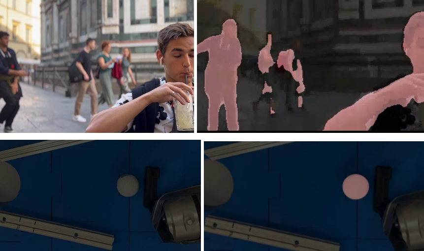
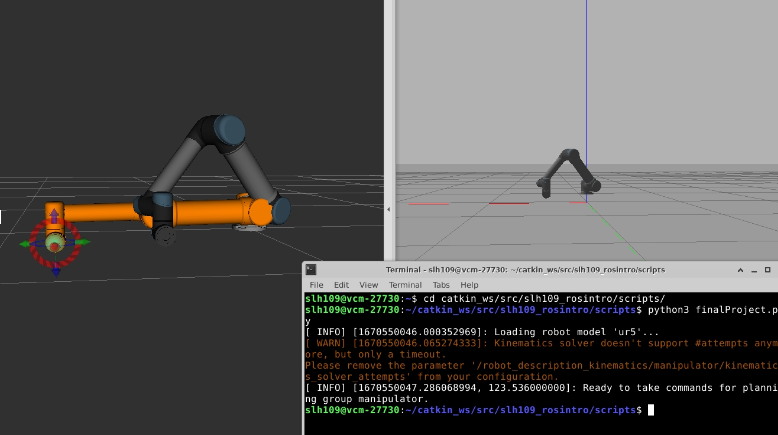

At a high level, our team tried to solve the problem of hitting a golf ball into a hole with a putter. We solved this problem by attaching a custom CAD-designed 3D printed golf club (putter) to the end effector of the UR5e robot arm. We then wrote Python code to program the UR5e to move in a straight line. This allowed the putter to hit the custom CAD-designed 3D printed golf ball into the hole on the custom CAD-designed 3D printed golf course. To add another element of complexity, at the beginning the ball is in one of two possible starting positions; a video segmentation algorithm is used to identify this binary starting condition. The segmentation incorporated a previously trained model - the DeepLabV3.
Collected data from the RGBD camera and wrote the segmentation script that uses the pre-trained DeepLabV3 network. Unfortunately, configuring the RGBD camera such that it would directly send data to ROS proved very difficult, as an older version of python was needed to read camera data. Instead, the built-in laptop camera was used, which worked just fine. Although this data is never directly sent to ROS, with more time this would be incorporated. Also worked on editing the launch files to run on the real robot. This included ensuring that the joint controller file was configured and referenced, adding the IP address of the UR5e to the launch, setting all “simulation” tags to false. Finally helped turning the UR5e on and deactivating safety stops. Images of the segmentation results are shown below, both for a test video and for the real setup.
Challenges occurred when importing the CAD models of the objects we wanted to use in Gazebo. Utilizing different methods we tried converting STL to URDF to SDF and then loading the model into the world; however, Gazebo had trouble converting to SDF and would develop a blank file. Therefore, we tried to simplify the models to basic geometric shapes and attaching the them to the robot, but hard coding the club to attach to the robot was difficult. Further challenges were due to delays and inconsistency in 3D printing. The EE attachment did not print in time for the real world testing, so duct tape was used, and metal bumpers were needed due to the uneven flooring of the golf course.
